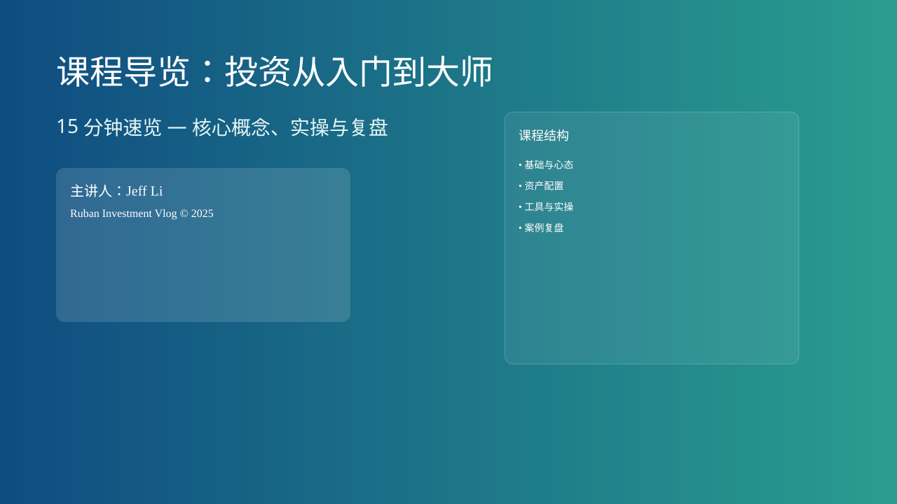
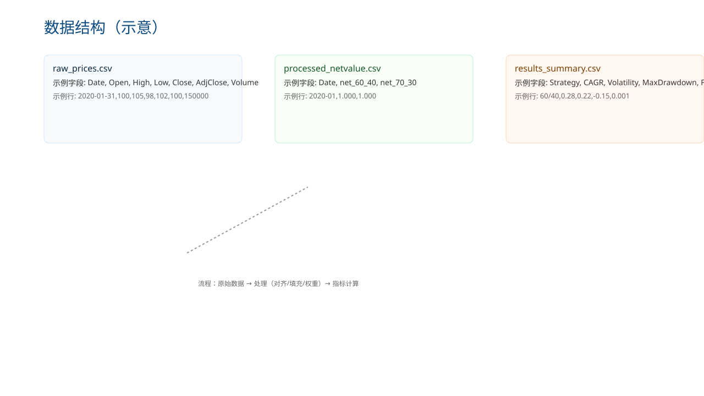
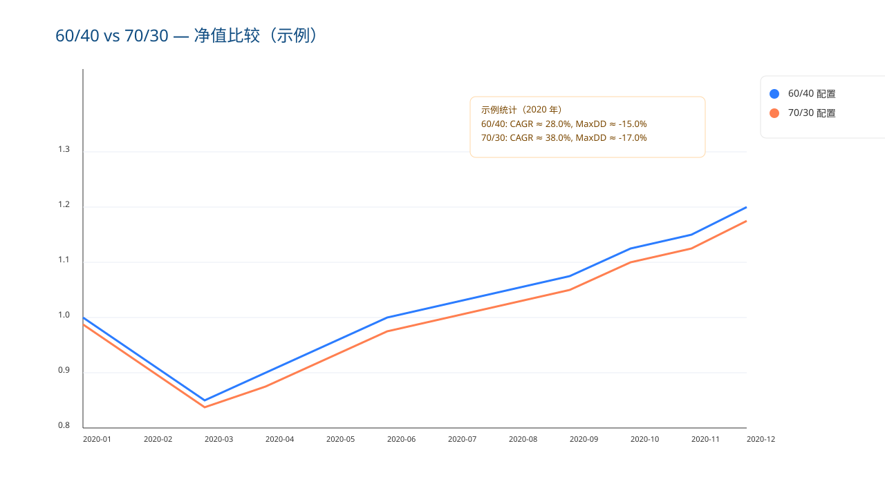
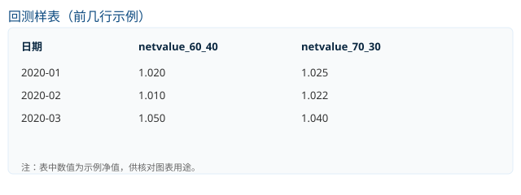

课程导览：投资从入门到大师
- 课程目标与期望
- 学习节奏：15 分钟微课
- 实操与复盘闭环

这是课程封面，快速告诉你：课程的主题、主讲与七个阶段的总体结构。
无数值轴；为视觉/引导使用。
Talking points
- 本课程按七个阶段组织，目标是把投资研究变成可复现的流程。
- 每节课约 15 分钟，包含关键概念、实例与短练习，方便碎片化学习。
- 学习重点是理解方法与写复盘，而不是记住操作命令。
More
把封面当作课程地图：记下你最感兴趣的阶段并按节推进。
为什么要系统学习
- 方法优先于直觉
- 闭环：看—做—评
- 把假设量化为可检验结果
这一页说明为什么要把学习做成闭环：把观察变成能检验的结论并不断改进。
Talking points
- 把直觉转为方法，便于验证与复盘。
- 记录参数与结论，能把经验转成可复现的流程。
示例（练习）：写出一个你当前的投资想法并把它拆成可检验假设（1 行）与 2 个可测量指标。
课程结构（7 个阶段）
- 7 个阶段总览
- 每阶段含理论与实操
- 建议节奏：每周 2–3 节
课程分为七个阶段：基础与心态、资产配置、工具详解、估值与风险、策略与组合管理、进阶分析、案例复盘。
示例数据：在你的 `watchlist.md` 中选 10 个标的并记录 8 周的每周小结作为阶段性练习。
学习方法
- 看—做—评 学习闭环
- 交付物应可复现
- 短复盘促进改进
交付物应包含：简短说明、主要参数、关键图表与结论，便于复现与审阅。
示例交付物结构： `results_summary.csv`（CAGR, Volatility, MaxDrawdown） + `readme.md`（运行环境与参数）。
核心概念
- 净值（netvalue）
- 年化收益 vs 波动率
- 最大回撤与再平衡
定义与简单计算示例：CAGR、年化波动率、最大回撤。
数据示例（CSV 摘要）：
Date, netvalue 2020-01,1.000 2020-12,1.280
用于口播示例：CAGR = (1.280/1.000) - 1 = 28.0%
数据与工具
- 示例数据检查要点
- 常用工具：Python + pandas
- 生成净值曲线的基本步骤

示例文件：raw_prices.csv、processed_netvalue.csv、results_summary.csv。
示例表头：Date, Open, High, Low, Close, AdjClose, Volume
示例：配置比较
- 比较两种配置的长期表現
- 关注年化收益、波动与回撤
- 考虑手续费与再平衡影响

对比图用 SPY/AGG 生成净值曲线并计算关键指标。
示例数据
Date, net_60_40, net_70_30 2020-01,1.000,1.000 2020-03,0.850,0.830 2020-12,1.280,1.380
示例口播：70/30 提升了年化回报但回撤也更大（本示例：38% vs 28%）。
示例：回测样表
日期, netvalue_60_40, netvalue_70_30 2020-01, 1.020, 1.025 2020-02, 1.010, 1.022 2020-03, 1.050, 1.040
- 前几行数据用于核对
- 观察净值走势差异
- 核对数值保证可复现

示例表用于核对图表与原始数据一致性。
如何解读回测结果
- 年化收益：长期趋势
- 波动率：风险度量
- 最大回撤：压力测试
要点：把结论限制在 2–3 条可执行建议，并给出衡量标准。
常见错误与调试
- 检查数据频率与空值
- 核对编码与分隔符
- 使用日志与断言定位问题
示例调试流程：抽样运行、打印前几行、检查列头与日期连续性。
复盘模板
- 目标、方法、结果摘要
- 列出问题与改进计划
- 量化改进效果
示例复盘行：本月回测年化 5.4%，最大回撤 8.3%；改进：改为季度再平衡。
KPI 与长期评估
- 完成节数与练习通过率
- 回测年化与最大回撤
- 每月汇总并绘趋势图
示例 KPI 表格：Month, LessonsDone, ExercisesPassed, CAGR, MaxDD
交付物格式（参考）
- 可复现的脚本与结果表（建议保留样例）
- 清晰的图表与简短复盘
- 记录运行环境与主要参数
示例提交包： `portfolio.md`, `results_summary.csv`, `readme.md`（参数与环境）。
学习建议与扩展资源
- 即学即做与定期复盘
- 推荐阅读與 notebook 示例
- 三个月为一周期的深度回顾
示例资源：推荐书单与两份 notebook 示例（链接在仓库）。
总结与下一步
- 方法优先于工具
- 坚持复盘与量化评估
- 准备好周期性复习与优化
结束练习：写一条 2 分钟速记，包含要点、疑问与下一步行动。